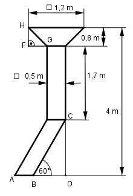

Aufgabe 277 Wie viel g Farbe braucht man, um den Auffüll- trichter außen zu streichen, wenn man mit 150 g Farbe 1 m2 streichen kann?

Im Dreieck BDC gilt: DC = 4 m - 1,7 m - 0,8 m = 1,5 m DC sin 60° = ---- |*BC BC BC * sin 60° = DC |:sin 60° DC 1,5 m BC = --------- = ------- = 1,73 cm sin 60° 0,866 Satz von Pythagoras im Dreieck FGH: 1,2 m - 0,5 m FG = ----------------- = 0,35 m 2 GH2 = FG2 + FH2 = = 0,352 m2 + 0,82 m2 = 0,7625 m2 |√ GH = 0,87 m Zu streichende Fläche A: Pyramidenstumpfmantel PS: 1,2 m + 0,5 m PS = 4 * ---------------- * 0,87 m = 2,96 m2 2 Prismamantel Z: Z = 4 * 0,5 m * 1,7 m = 3,4 m2 Schräges Prisma P: P = 2 * 0,5 m * 1,73 m + 2 * 0,5 m * 1,5 m = = 3,23 m2 A = PS + Z + P = = 2,96 m2 + 3,4 m2 + 3,23 m2 = 9,59 m2 Farbmenge = 9,59 m2 * 150 g/m2 = 1 439 g